고려대학교 석사
전기전자공학과
PROFILE
학력
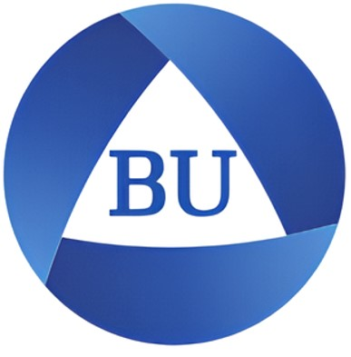
경력
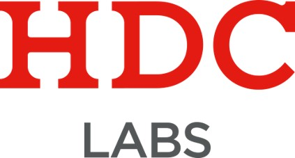
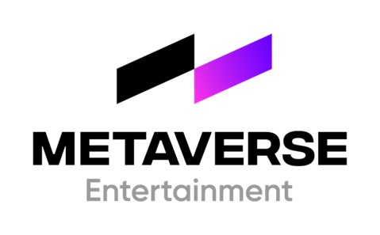
핵심 강점
기술 스택
PROJECT 01
자연어와 이미지 기반 데이터 탐색부터 VLM 보조 검수, 사람 승인 기반 학습까지 연결
HDC LABS 2026.07 - 2026.09
비개발자의 데이터 현황 파악과 개발자의 데이터 운영을 연결전체 흐름도 보기 →
비개발자가 보유 데이터의 종류와 규모를 빠르게 파악하는 탐색 환경 구축
지속 추가되는 데이터를 일관된 기준으로 관리하고 탐색, 검수 및 학습 후보로 연결
자연어 및 이미지 질의로 데이터 유형, 규모, 출처와 라벨 상태 조회
신규 및 변경 데이터를 증분 색인해 최신 데이터 현황과 검색 결과에 반영
VLM 보조 검수로 검색 결과와 객체 라벨의 일치 여부 및 판단 근거 제공
수만 장 규모의 비전 데이터를 통합 색인해 대화형 현황 탐색 경로 구축
탐색부터 VLM 검수, 사람 승인 기반 GPU 학습과 결과 조회까지 E2E 흐름 검증
모델 오탐 이미지를 유사 데이터 재탐색과 후속 학습 후보 구성으로 연결
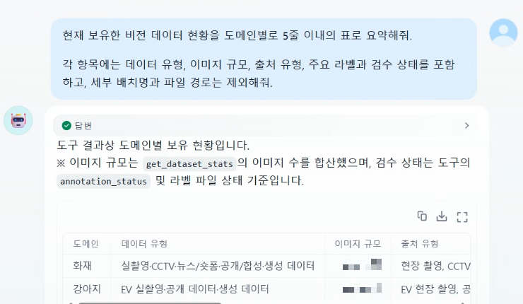
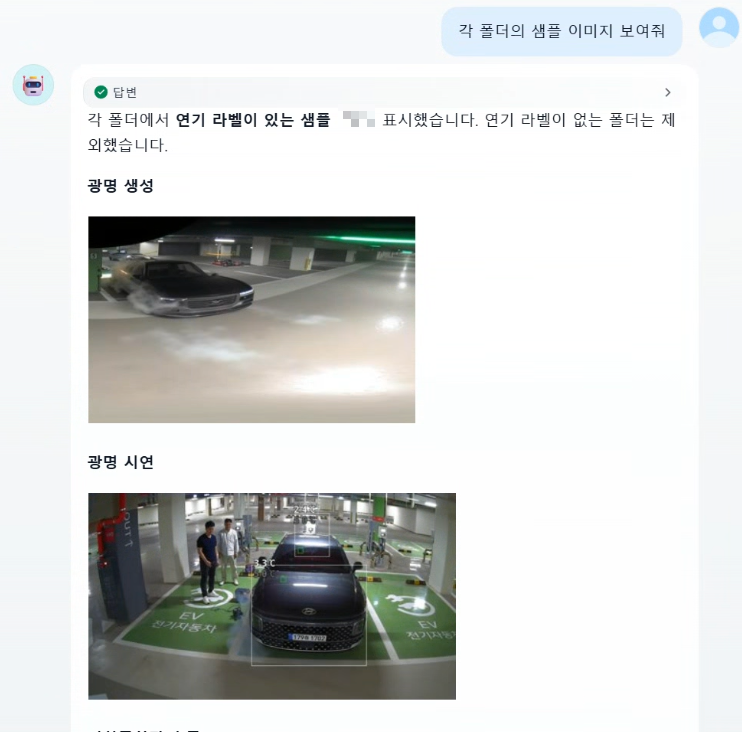
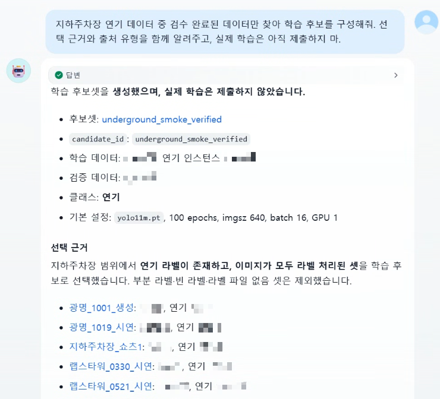
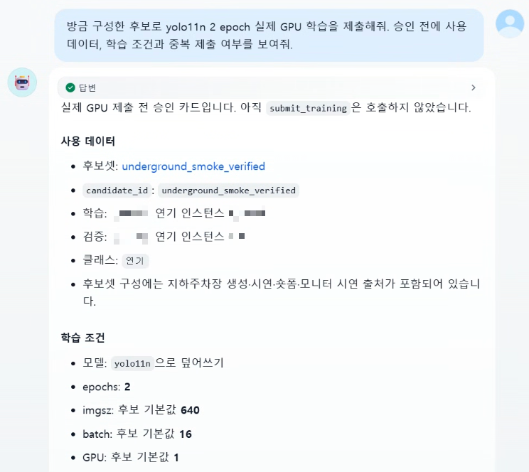
PROJECT 02
방문자 분석 요구의 타당성을 판단하고 PoC 범위와 KPI를 정의, Vision Agent 기반 품질 관제로 확장
HDC LABS 2026.03 - 2026.07
HDC LABS 2026.03 - 2026.07
출입구 CCTV 기반 방문자 IN/OUT 및 특성 분석의 현장 적용 가능성 검증
실환경 데이터 기반 모델 성능과 운영 조건의 확인
온프레미스 환경과 개인정보 보호 조건을 반영한 CCTV 데이터 처리 구조 설계
기능별 KPI와 평가 기준을 수립하고 데이터 수집, 라벨링과 검수 체계 설계
다중 사용자 라벨링 도구 구축 및 검수 기준 설계
요구 분석, 평가 설계, 개발 실행과 현장 검증을 연결한 단계별 추진 체계 수립
내부 사업개발 PM과 AI 엔지니어 3명의 역할, 실행 항목과 완료 기준 구조화
기술 타당성, 데이터 확보 가능성과 검증 결과 기반의 우선순위 및 개발 방향 결정
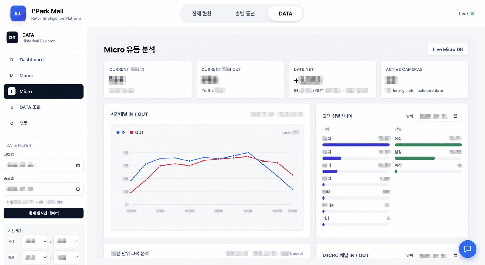
영상과 얼굴 정보를 외부로 전송하지 않는 현장 분석 환경 운영
22개 CCTV, 3주 운영, 방문 기록 250만 건 이상 처리
라벨 데이터 구축과 n8n 기반 진척 관리 자동화 구성
연령대 및 성별 라벨 데이터 약 5만 장 구축
작업자 5명의 객체 수와 달성률을 집계해 업무 메신저로 공유
Retail 챗봇 260문항 평가셋을 두 가지 기준으로 검증
정답 일치 여부와 응답 품질을 함께 평가
현장 표본과 분리된 평가 세트 기반 기능별 성능 확인
대표 출입구 직접 계수 및 CCTV 재검수를 통한 정확도 약 95% 확인
외형 판정 평가 라벨 기준 성별 90.7%, 연령대 90.5% 일치
Retail 챗봇 260문항에서 정답률 83.1%, 답변 품질 3.82/5, 사실 정확성 4.28/5 확인
카메라 녹화 기록과 방문객 지표 이상을 정기적으로 점검할 관리 체계의 필요성 확인
후속 통합 관제 Agent 구현 및 사람 검토를 통한 7개 카메라 설정 조정
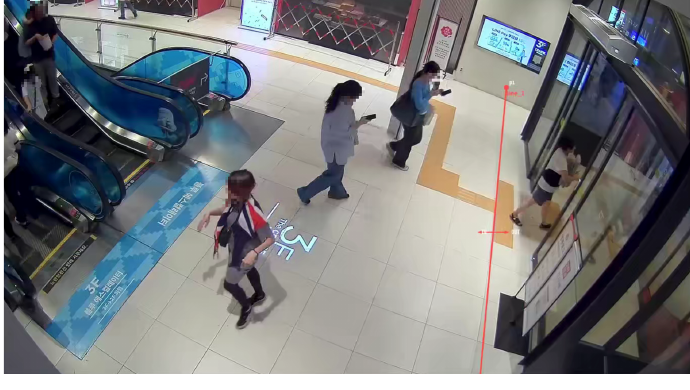
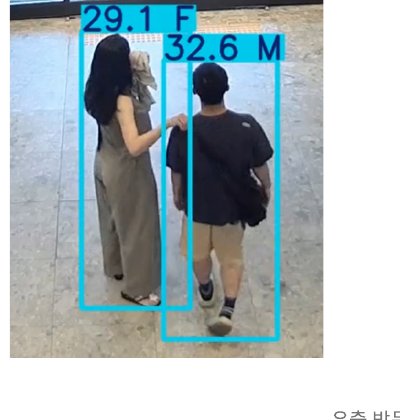
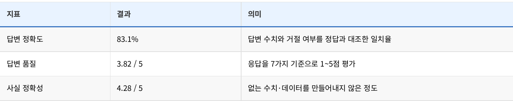
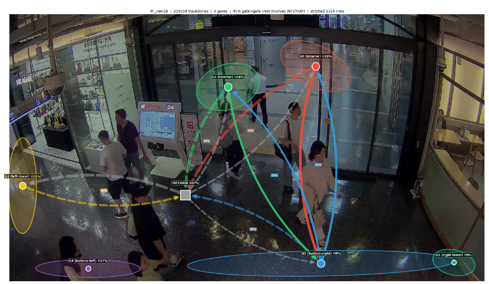
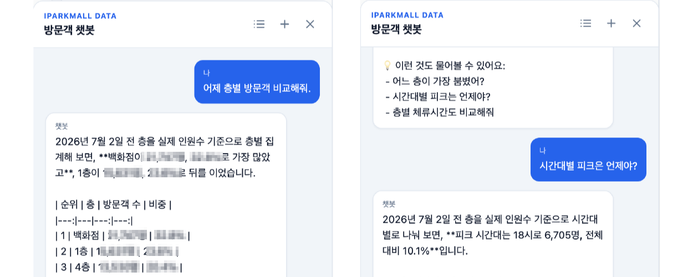
LangGraph 기반 판단 분리와 운영 품질 관제전체 흐름도 보기 →
카메라 및 시간대별 방문객 지표의 이상 탐지와 사후 원인 검토 근거 확보
원본 방문객 지표를 변경하지 않는 운영 품질 검수 구조 구축
규칙 및 통계 탐지기로 이상 여부와 S0부터 S3까지 심각도 판정
GPT-5.5를 수치 기반 원인 설명과 궤적 이미지의 원인 후보 진단에 각각 적용
진단 결과가 이상 등급과 운영 설정을 변경하지 않도록 판단 권한 분리
운영 TimescaleDB 5개 테이블의 읽기 전용 조회 및 별도 QA 영역에 검토 결과 기록
S1과 S2는 품질 플래그 기록, S3는 LangGraph 사람 승인 대기 분기
22시 30분 야간 배치 및 S3 사건 발생 시 메일 검토 요청 경로 구성
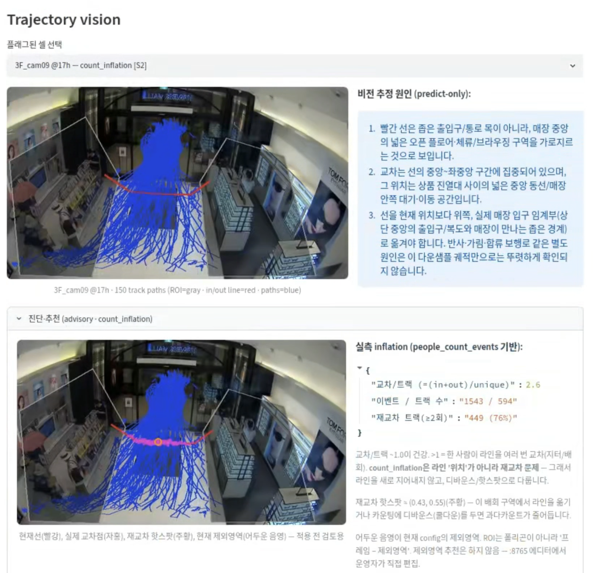
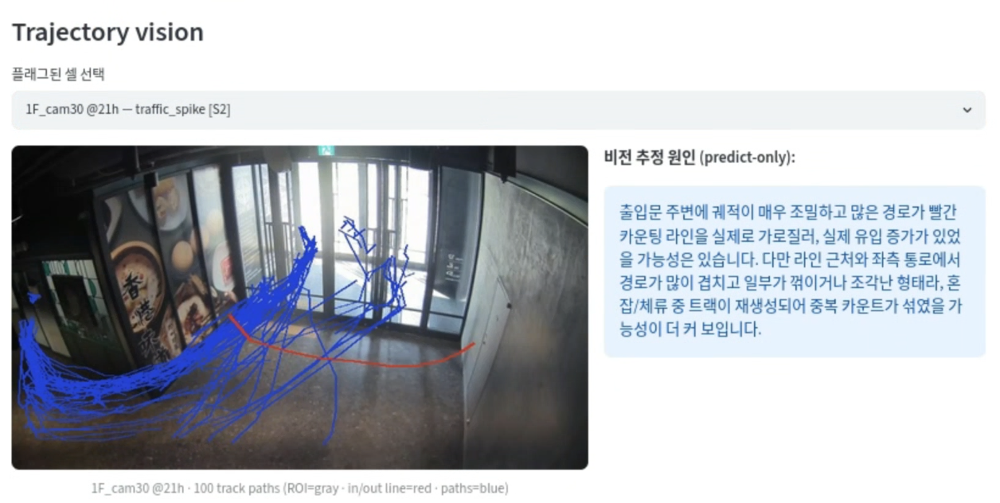
PROJECT 03
엘리베이터 현장 적용을 목표로 데이터 구축부터 모델 검증, 배포 자동화까지 수행
HDC LABS 2025.01 – 2026.02
HDC LABS 2025.01 – 2026.02
AI 기반 엘리베이터 내부 상황 실시간 분석 시스템 개발
엘리베이터 내부 점유 상태, 반려견 합승 등 실시간 상황 분석
기술 제휴 MOU 검토를 위한 엘리베이터 내부 상황 분석 PoC 설계 및 성능 검증
실서비스 적용을 위한 배포형 모델 구조 최적화 및 검출, 판단 로직 정교화
엘리베이터 특수 시점 대응 합성 데이터 생성 및 실데이터 수집, 라벨링 체계 구축
모델, 코드 변경사항 반영을 위한 배포 자동화(CI/CD) 환경 구축
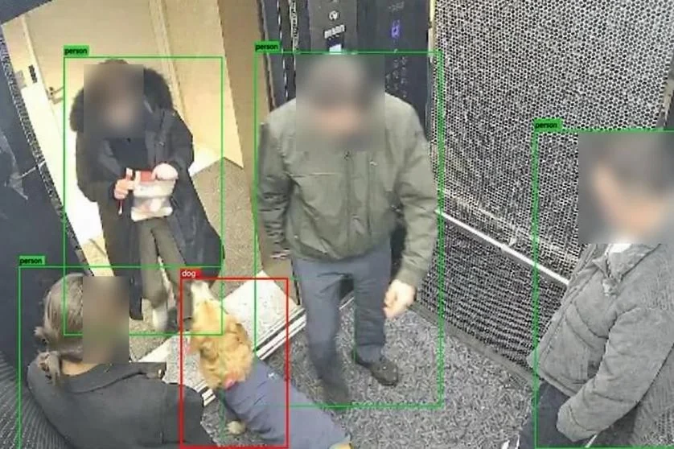
반려견 검출과 점유율 추정이 가능한 상황 분석 PoC 설계 및 검증
HDC현대산업개발, HDC랩스, 현대엘리베이터 기술 제휴 MOU 체결
PoC 검증 결과를 3사 기술 제휴 검토의 기술적 근거로 활용
10Hz 상태 송신 요구 대응을 위한 Jetson 기반 경량 구조 전환
사내 엘리베이터 2대 실연동, E/V 운행 및 도어 제어 검증
운영 시나리오 중심 검증 및 판단 로직 최적화로 제품화 가능성 제고
top-view 차폐, door status 기반 상황과 CAN payload 출력 구조 검증
내부 7개 시나리오 평균 KPI 97.7% 달성
도메인 특화 합성 데이터 생성 체계와 실환경 데이터 확보 및 정제
반려견 검출 mAP50-95 0.47 → 0.79 개선
Jetson(ARM64) 환경의 모델 빌드 및 도커 기반 배포 파이프라인 구축
코드 변경 시 빌드 및 배포 파이프라인이 자동 실행되도록 전환
Vision AI 전반 후속 연구 및 IP 자산 확보 기반 마련
관련 논문 2편 제출, 특허 3건 발명자 등재
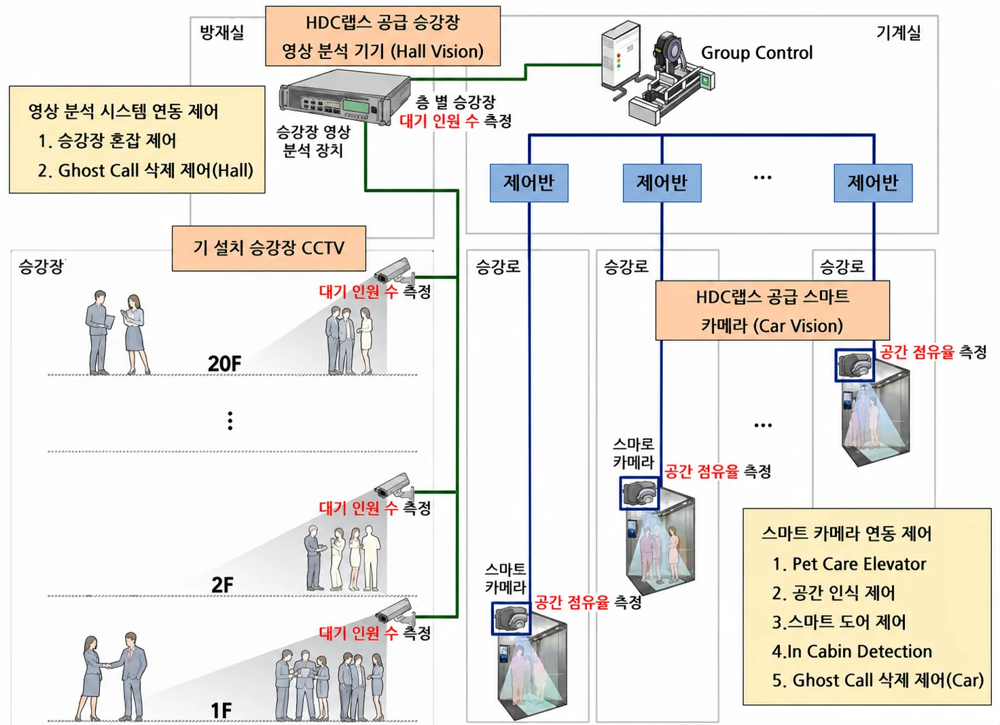
PROJECT 04
지하주차장 CCTV 환경에 맞춰 PoC 설계부터 현장 배포까지 전 과정 수행
HDC LABS 2024.10 – 2025.10
HDC LABS 2024.10 – 2025.10 Deployed
잇따른 지하주차장 전기차 화재 사건 발생으로 전용 감지 시스템 요청
이상 온도 조기 감지 및 자동 알림이 가능한 화재 감지 보조 시스템 구축 필요
지하주차장 CCTV 환경 특화 합성 데이터 생성 프로세스 설계 및 구축
합성 데이터 기반 화재, 연기 탐지 YOLO 모델 재학습 및 성능 검증
PoC에서 현장 배포까지 단계별 프레임워크 연구 및 재설계
외부 포팅 업체 및 내부 연계 조직과 협업하여 알림 서비스 연결
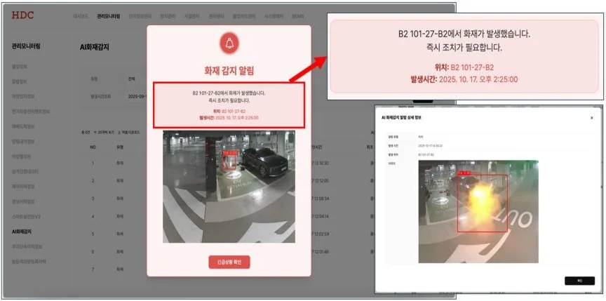
YOLOv8s + VLM(Florence2) 기반 화재, 연기 탐지 PoC 설계 및 논문 발표
합성 데이터 활용으로 화재, 연기 탐지 정량적 성능 향상
F1 0.82 → 0.86, 연기 recall 0.70 → 0.83
도메인 특화 데이터 생성 파이프라인 구축으로 후속 연구로 확장
추가 연구를 통한 논문 게재 및 특허 등록
초기 VLM 중심 PoC 구조에서 엣지 디바이스 제약으로 현장 적용 한계 확인
YOLOv8n + CLIP 경량 구조로 전환, Hailo 듀얼 칩 기반 실행 구조 확정
단순 모델 교체가 아닌 판단 구조 자체를 사후 검증 방식으로 재설계
광명센트럴아이파크 전기차 충전구역 화재 감지 보조 시스템 시연 및 적용
현장 운영 중 모델 오탐 이슈에 대한 원인 분석과 재학습 대응 수행
반복 오탐 케이스를 학습 데이터로 재반영해 현장 대응 모델 개선
운영 초기 대비 오탐 알람 약 88% 감소
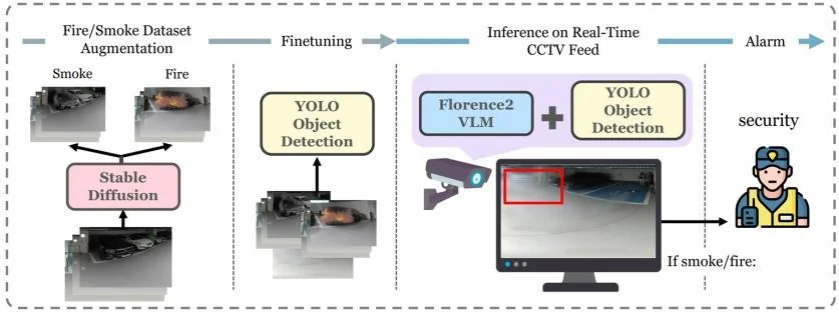
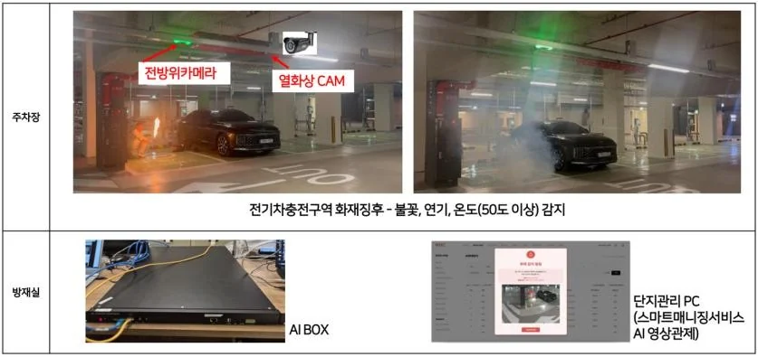
PROJECT 05
버추얼 인플루언서 이미지 생성, Face Re-Aging, 화자 변환 음성 AI
METAVERSE ENTERTAINMENT 2023.01 – 2024.05
METAVERSE ENTERTAINMENT 2023.01 – 2024.05
PUBLICATIONS & PATENTS
Publications
실무에서 출발한 대표 연구